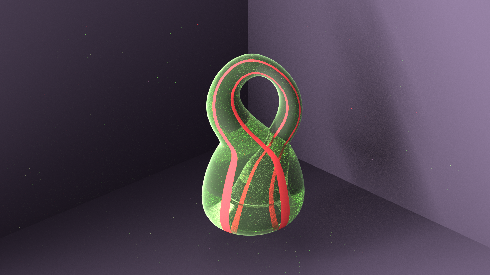
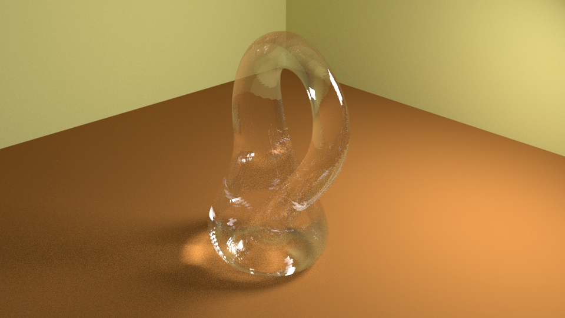

Geometrical Structures Portfolio
I've uploaded some of the fun things I've done with geometry here.

This was my first try making a Klein Bottle. I was playing around with using python to generate the geometry of the Klein Bottle (by parametizing the surface as a sort of cylinder that wraps into itself); but I couldn't get the glass to look like real glass, so you can't really see 'inside'.

For this Klein Bottle, I tried cutting out every second face, but leaving the material of the Klein Bottle as opaque, so you can see inside how it wraps around.

To better visualise the the Klein Bottle, I painted one strip of faces red, and changed the material into a green glass. You can see that the strip gets refracted when it enters the Klein Bottle; pretty interesting.

For this one, I tried to make it as realistic as possible; but I'm still not happy with the low resolution of the glass on the 'inside' of the Klein Bottle... it just doesn't look very realistic.

I tried experimenting with other shapes too; for instance fractal geometry like the Sierpinski's Pyramid. At first, I had python recursively define the pyramid; but then I realised it was much easier to use Blender's inbuilt array tools to simply copy and paste the pyramid multiple times, making it more and more intricate.